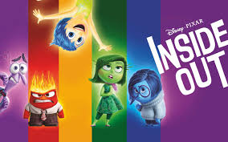
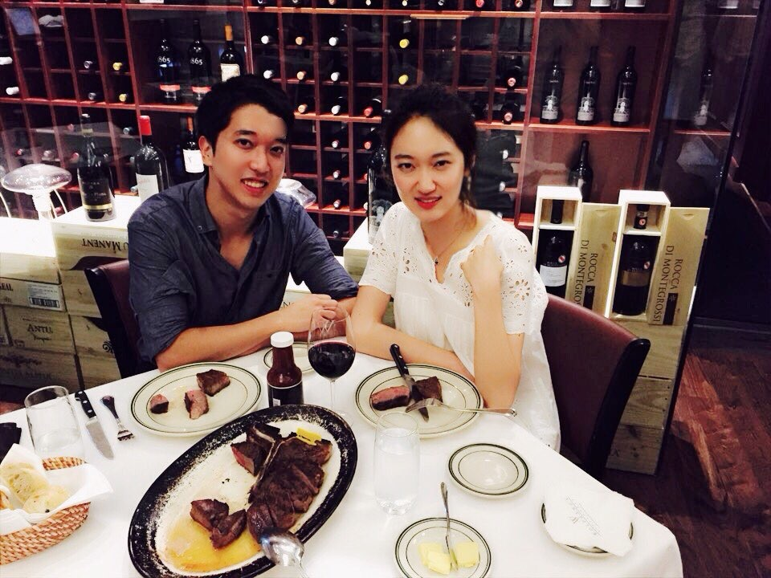
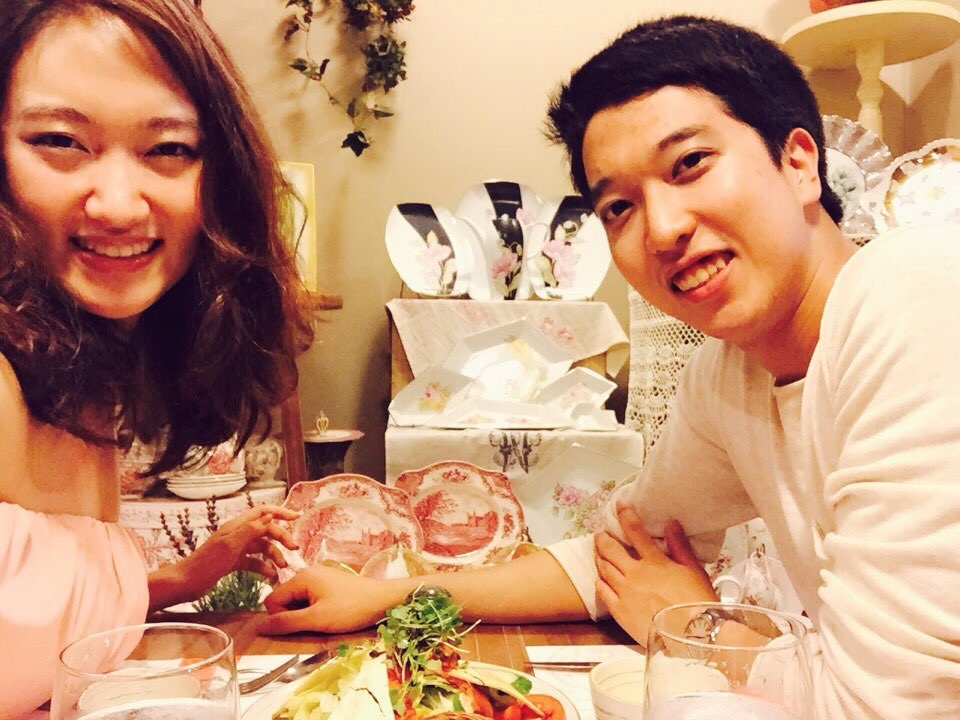
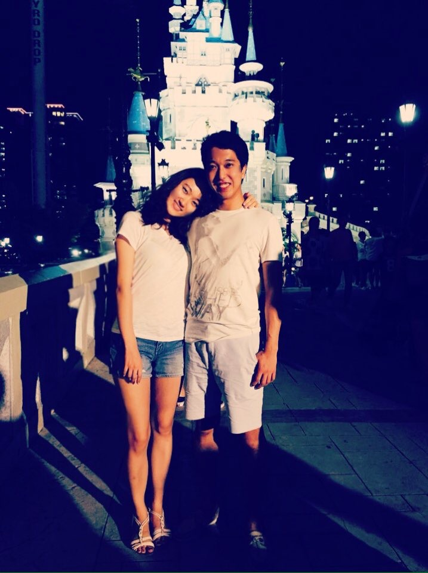

This is a story of how a boy met a girl. I'm sure there are millions of similar stories out there. But the fact that there are millions of diamonds out there doesn't mean that each of them is distinctly yet astonishingly beautiful.
To this day, I can't believe how lucky I was on the summer of 2015. It all started with an innocent Facebook chat on June 21st, 2015, my last day in the Korean military(my two-year service concluded on the 22nd). It was a how-are-you type of chat, no longer than 5 minutes long, where Nicole casually congratulated me for having completed my time in the Army. As conversations of the sort usually go, we arranged a date - July 7th, 2015 - for us to have dinner in Seoul. I would be interning at a gaming company, and she in a financial firm in the vicinity as well, so things just ran their natural course of action.
This is where it all started. A sandwich shop 5 minutes away from where I had worked. Here's an anecdote that Nicole never lets me forget: I was actually late to our very first dinner together, and to make it worse, I changed the venue 5 minutes before we were scheduled to meet. In my defense, it was because I had gotten off work especially late that day - but the underlying reasons notwithstanding, I was late. The sandwich shop was a result of my frantic last-minute Google searches, and truth be told the food wasn't all that memorable at all.
Just when it was bound to end as a meaningless dinner between two former schoolmates, we headed into a bingsu shop (bingsu is a Korean summer treat made with shaved ice, milk, and toppings of your choice. Ours happened to be mango). We started talking. And talking. For minutes, tens of them, maybe even hours. By the time it was time for her to head back home, I had explicitly told her that it was one of the most memorable dinners I had had in quite some time. And it wasn't sweet talk - I really did mean it, in that she was so similar to and different from me at the same time. But at the end of the day, it was just that - a dinner between two former schoolmates who had gone down different paths after graduation.
Though I've never really told her, after that first dinner, I couldn't get the thought of asking her out for the second time out of my head. I would constantly ponder on the bus, at home, and even at work on what my next excuse for meeting up with her would be. As every guy can probably relate to, I was almost quite literally feeling those butterflies in my stomach, balancing on the delicate line of making that bold move or not. Then, a thought hit me.
What if she really did agree to go out with me? Wouldn't I regret each day not spent with her?
That was the final push in the back. At the risk of everything burning down in flames(well maybe not that dramatic, but in the spur of the moment that is indeed what it felt like), I decided to ask her out for a movie - Inside Out.
It was an amazing movie. Top-notch. But this isn't about how tight the storyline is, or how amazing the creators' imaginations were(both are true, by the way, despite Nicole's opinions of the contrary). This is about what happened on the night of July 15th, 2015. After the curtains were closed(or rather, the popcorns were trashed), we sat on a bench and talked again. And this time we literally talked for hours straight. About what, I really can't remember even when I rack my brains for memories of that conversation. All I can recall is that I was simultaneously feeling giddy and relaxed, as if I had been longing such a conversation for a long time. It felt right. If it weren't for the subway closing down, who knows how long we'd stayed on that bench, talking trivial matters but feeling anything but that.
We bid farewell and parted ways. But just as the adrenaline started to wear off, I'd realized that after all that, I hadn't had anything set up for us - no next date, no plans, no nothing. And in a frantic and regrettably spur-of-the-moment fashion, I called her cell phone while on my way back home from the subway station.
Now, I know that my memories from this night are mostly hazy, likely due to anxiety. But this phone call was something else, in that I literally cannot remember anything, not a single thing. Nicole has since then filled me in on a lot of the details on what I'd said over the phone(given how awkward it seems to have sounded like, the fact that I cannot recall a large portion of it doesn't sound so bad after all). But the bottom line is that after beating around the bush for quite some time, walking countless times back and forth in the playground in front of our apartment complex, I asked her if she'd go out with me, word-by-word.
There was silence, maybe some giggling over the phone. Or was it just my mind playing tricks?
The intermission was perhaps a minute long, probably shorter than that. But as cliche as it sounds, it sure felt a lot longer than a single minute. Interestingly enough, contrary to the cliche my head didn't have a thousand different thoughts swirling about in chaos. That was probably because it was immersed in one thought and one thought only: "Please say yes." It was like waiting to watch a penalty shoot-out of a major soccer match - everything goes deaf, and your entire senses are locked in on that single moment of truth.
And alas she agreed.
Again, I can't really recall the details even after we were indeed a thing, this time because of overwhelming relief. I remember silently jumping up and down in the playground, fittingly so because that's probably what playgrounds are made for anyways. As awkward as it was, in what would be the first of many, many more to come, we bid each other goodnight.
And so our journey together began. Even after a whole year has gone by, I still remember the skittish texts that we exchanged on our first day as two people who still weren't sure what we were. All the major milestones - the first dinner together, the first exhibition, the first phone-call-just-to-listen-to-your-voice, the first glass of soju - will forever be cherished in my mind as the stepping stones for who we are today.
Yes, we get fancy at times. Whenever Nicole tries to convince me into a vegetarian diet, I turn to this picture to remind her of just how glorious steak is, and how much it makes our lives better.
This was the day before my last day at Riot Games. The walls of the palace we'd visited were beautiful, but the restaurant was probably what caught Nicole's eyes. She absolutely loved how the interior design was done, down to the china plates on the walls.
Wonderland! Just kidding, I get dizzy real fast. I was probably not seeing straight when we were taking that picture due to motion sickness.
One of the epithets of writing that I adhere to is that the first two sentences tell everything there is to be told, which is why Chapter One was perhaps the most important chapter ever to be written in our book, in that it laid out the ground rules for who we are and what we do.
There are many things that we still haven't done together. But there are many, many things that we've done together, too, and Chapter One will always be remembered for how it all began.